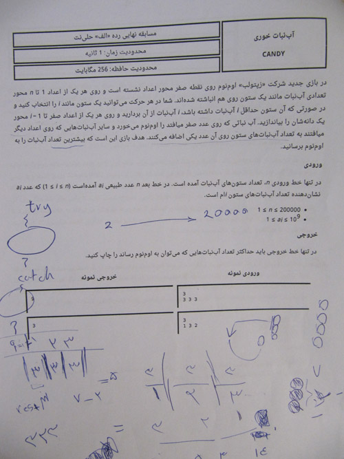

متن سوال:
پاسخ:
خوب این سوال از نظر من سادهترین سوالشون بود، شما فقط نیازه که ببینی که طلسم کجا میره و دقیقن مسیرش رو طی کنی! به همین سادگی به همین خوشمزگی!:)
کد سوال:
#include <iostream>
#include <string>
using namespace std;
int main()
{
string s;
cin>>s;
int n = s.length();
bool a[n];
for(int i = 0; i < n; ++i)
{
a[i] = (s[i] == 'X');
}
int mx = 1, m = 0;
while(m != -1 && m != n)
{
if(a[m])
{
mx *= -1;
}
a[m] = !a[m];
m += mx;
}
if(m == -1)
cout<<"YES";
else
cout<<"NO";
return 0;
}
#include <iostream>
#include <string>
using namespace std;
int main()
{
string s;
cin>>s;
int n = s.length();
int c = 0;
int l = 0;
bool kharab = 0;
for(int i = 0; i < n; ++i)
{
if((s[i] == 'L' && l == 1)) kharab = 1;
if(s[i] == 'S')
c++;
else
{
l++;
l %= 2;
if(!kharab || l == 0)
c++;
}
}
cout<<c;
return 0;
}
متن سوال:
راه حل:
خوب این سوال رو من توی علامه حلی جوابش رو به دست آوردم ولی به دلیل استرس زیادی که داشتم هرکاری کردم نتونستم کدش رو بزنم! :D :-O !
خوب بگذریم.
اگه یه تعداد تست انجام بدید متوجه میشید که عدد kام میتونه از جایگاه ۱ تا 2k-1 بیاد. (k از ۱ شروع میشه).
خوب پس عدد اول فقط میتونه توی ۱ باشه.
عدد دوم توی ۲ و ۳ (چون یک گرفته شده)
و ...
(البته این تقریبن بدیهی هست که چرا تا 2k-1 بیشتر نمیتونه باشه.)
و همچنین باید بدونیم که 2k-1 باید <= n باشه وگرنه خود n.
خوب دیگه جواب رو گفتم بریم سراغ کد سوال.
کد سوال:
#include <iostream>
using namespace std;
int n, delta = 1000000000 + 7; // 10^9+7
int getk(int i)
{
int k = (2*i)-1;
if(k > n) k = n;
return k;
}
int main()
{
cin>>n;
long long c = 1;
int k;
for(int i = 1; i <= n;i++)
{
k = getk(i);
c *= k-i+1;
c %= delta;
}
cout<<c;
return 0;
}
متن سوال:
راه حل:
خوب این سوال اگه بلد بودید sort کد بزنید یا تابع sort بلد بودید تقریبن ساده بود.
ما باید قابلمهها رو به ترتیب مساحتشون درون هم قرار بدیم و بعد محاسبه کنیم دیگه که چقدر آب توش جمع شده و چقدر از قابلمهی کوچکتر توی قابلمهی ماست.
کد سوال:
#include <iostream>
#include <algorithm>
using namespace std;
int main()
{
int n, c = 0, d;
cin>>n;
pair <int, int> a[n];
for(int i = 0; i < n; i++)
{
cin>>a[i].second>>a[i].first;
}
sort(a,a+n);
c = a[0].first * a[0].second;
for(int i = 1; i < n; i++)
{
if(a[i-1].second > a[i].second) d = a[i].second; else d = a[i-1].second;
c += (a[i].first*a[i].second)-(a[i-1].first*d);
}
cout<<c;
return 0;
}
متن سوال:
راه حل:
خوب این فقط نیاز هست بدونید حدس گلدباخ چیه! در این حدس گفته شده که هر عدد زوج برابر با جمع ۲ عدد اول و هر عدد فرد برابر با جمع ۳ عدد اول هست.
وقتی این رو بدونید با یک حالت بندی ساده حل میشه دیگه.
برای رفتن خر پرنده باید کامل x ها رو طی کنه بعد بره سراغ y ها (البته کلن فرقی ندارهها)
من یه تابع نوشتم که با دادن یک a به اون میگه که خر میتونه با چند حرکت بهش برسه به این صورت که یه حالت بندی ساده کردم. اگه صفر بود صفر. اگه اول بود ۱. اگه فردی بود که - ۲ یا +2 اول میشد ۲. اگه فرد بود ۳ و اگه زوج بود ۲.
حالا این تابع رو برای x و y استفاده میکنیم و باهم جمع میزنیم.
کد سوال:
#include <iostream>
#include <algorithm>
using namespace std;
bool isaval(int a)
{
for(int i = 2; i <= a/2; i++) if(a%i == 0) return false;
return true;
}
int javab(int a)
{
if(a == 1) return 2;
if(a == 0) return 0;
if(isaval(a)) return 1;
if(isaval(a-2) || isaval(a+2)) return 2;
if(a % 2 == 0) return 2;
return 3;
}
int main()
{
int x,y;
cin>>x>>y;
x = abs(x);
y = abs(y);
cout<<javab(x)+javab(y);
return 0;
}
متن سوال:

راه حل: